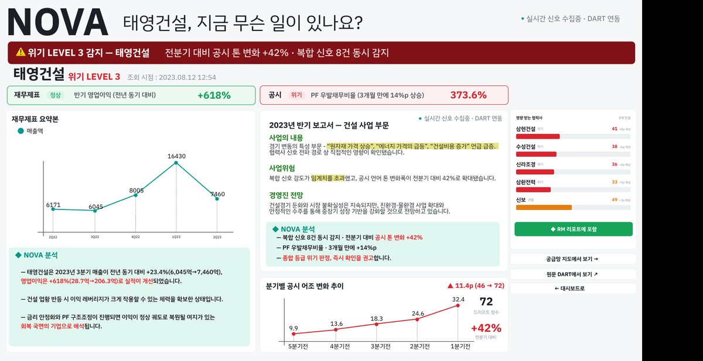
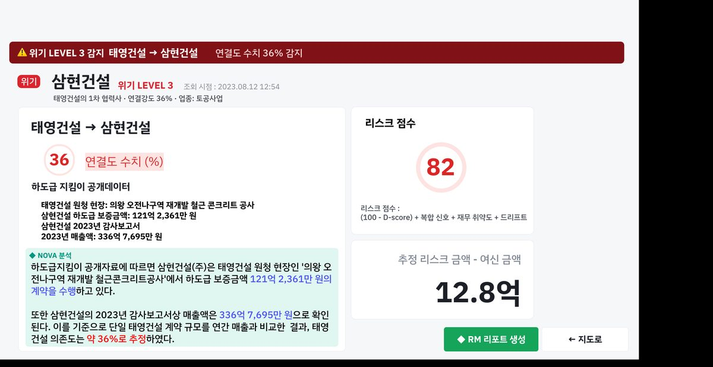
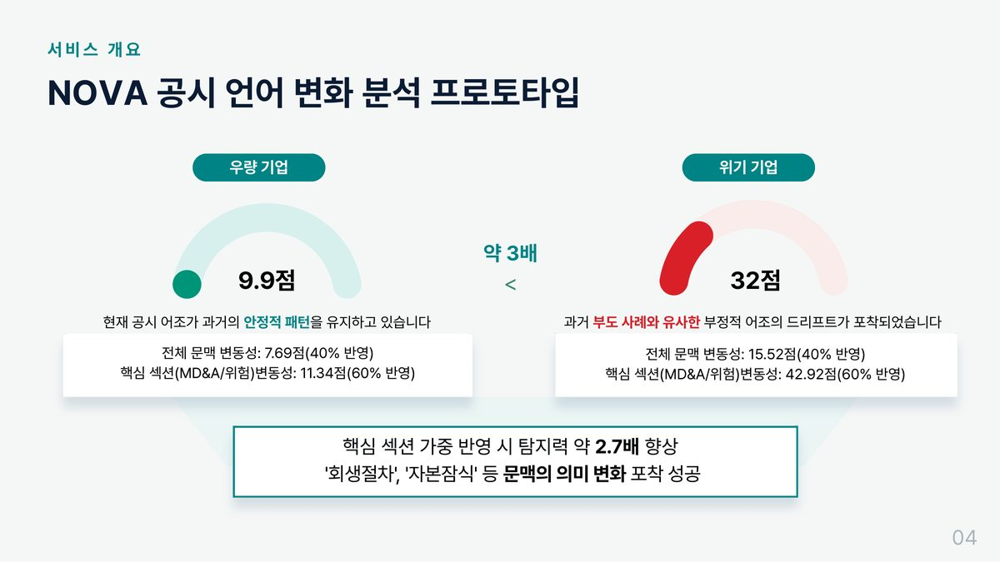
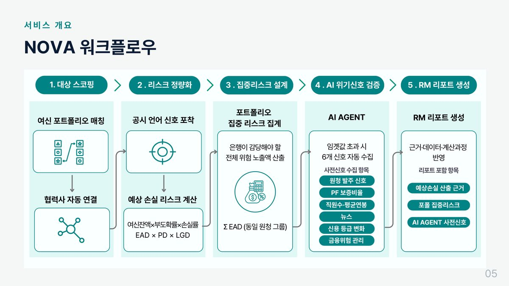
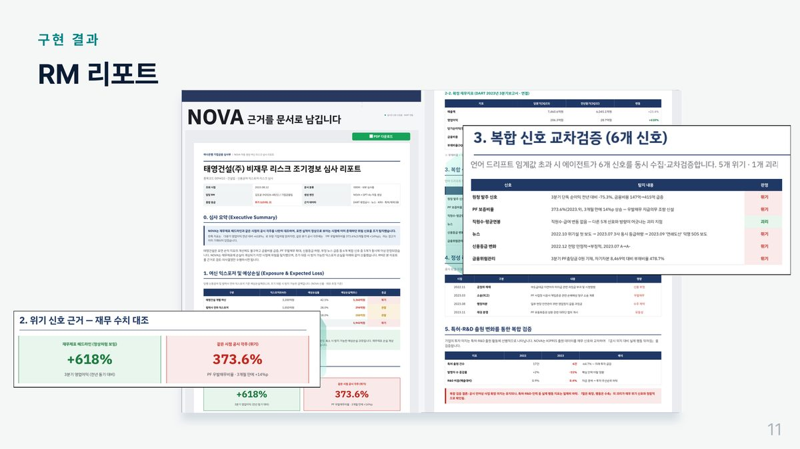
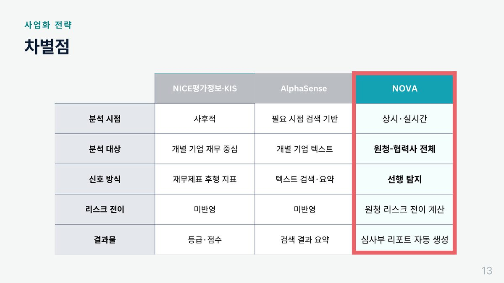

NOVA — 협력사 위기 조기탐지 시스템
재무제표가 나오기 전에 공시 언어의 변화로 원청–협력사 연쇄 부실을 미리 잡아내는 여신 리스크 시스템
- 은행이 대기업 여신을 볼 때 정작 큰 손실은 협력사에서 터집니다. 태영건설 워크아웃 때 협력업체 여신만 약 7조 원이 노출됐습니다.
- 재무제표가 나오기 전에 공시 언어의 변화로 위기를 먼저 잡고, 그 리스크를 협력사까지 확장해 예상 손실 금액으로 환산했습니다.
- 위기기업과 우량기업의 드리프트 점수가 3배 차이 났고, 공시 시그널과 협력사 매출의 상관은 r = 0.89 (p = 0.043)였습니다.


문제 🤔
재무제표는 후행 지표입니다. 숫자가 나빠진 걸 확인했을 때는 이미 늦습니다. 그렇다면 분기마다 쌓이는 수천 개의 공시 문장에서 재무제표보다 먼저 위험 신호를 읽을 수 있는지, 그리고 그 신호를 협력사까지 자동으로 확장해 은행이 감당할 금액으로 환산할 수 있는지가 이 프로젝트의 질문이었습니다.
접근 🛠
- 공시 본문의 어조 드리프트를 측정했습니다. 과거의 안정적 서술 패턴에서 현재 문맥이 얼마나 벗어났는지를 점수화하는 방식입니다.
- 전체 문맥 변동성과 핵심 섹션(MD&A·위험 요인) 변동성을 40 : 60으로 가중 합산했습니다.
- 설비투자·수주·소재 등 카테고리별 앵커 문장과의 유사도를
top-k(3) 평균으로 집계해 협력사 시그널(S점수)을 만들었습니다. - 리스크를 금액으로 환산했습니다 —
예상 손실 = EAD × PD × LGD, 그리고 동일 원청 그룹의Σ EAD로 집중 리스크를 집계했습니다. - 임계값을 넘으면 6개 신호를 자동 수집해 심사부 리포트 양식에 근거·수치·예상 손실액을 채워 RM에게 전달하도록 했습니다.
- 협력사 5곳의 분기 매출을 정답으로 두고 lag 0~3분기를 옮겨가며 상관을 측정했습니다.
결과 📈
위기기업의 드리프트 점수는 32.0, 우량기업은 9.9로 약 3배 차이가 났습니다. '회생절차', '자본잠식' 같은 표현의 문맥 변화가 실제로 포착됐습니다. 백테스팅에서는 한미반도체가 r = 0.89 (p = 0.043)으로 유의했고, 카테고리 중에서는 설비투자 신호가 평균 r = 0.86으로 가장 강했습니다. 대시보드 · 기업 상세 · 공급망 지도 · 협력사 상세 · RM 리포트까지 화면으로 구현했습니다.
이 프로젝트에서 제가 한 것 ✍
- 공시 언어 드리프트 모델 설계 — 과거의 안정적 서술 패턴에서 현재 문맥이 얼마나 벗어났는지를 점수화. 전체 문맥과 핵심 섹션(MD&A · 위험)을 40 : 60으로 가중
- 시그널 스코어링(S점수) 설계 — 설비투자 · 수주 · 소재 카테고리별 앵커 문장과의 유사도를 top-k(3) 평균으로 집계
- DART OpenAPI 수집 파이프라인 구축 — 학습 구간과 데모 구간을 시간으로 분리
- 공시 본문 섹션 파싱 + BGE-M3 임베딩 → pgvector 적재 (재임베딩 시 구버전 덮어쓰기 처리)
- 백테스팅 설계와 실행 — 협력사 5곳 분기 매출을 정답 라벨로, lag 0~3분기 상관 측정
- 데이터 누수 점검(r 0.97 → 0.72)과 shrinkage 보정(α=0.3) 적용, 한계 항목 문서화
금융 직무와의 연결 🎯
- 조기경보(EWS) 설계 — 재무제표라는 후행 지표 대신 공시 텍스트에서 선행 신호를 뽑는 구조. 은행 여신심사가 실제로 필요로 하는 지점입니다.
- 예상손실 정량화 —
EAD × PD × LGD와 동일 원청 그룹의Σ EAD집중 리스크 집계를 직접 계산해 봤습니다. - 리스크 전이 모델링 — 원청 부실이 협력사로 번지는 경로를 공급망 매핑으로 표현했습니다.
기술 선택과 판단 근거 🧭
왜 그 방법을 택했는지, 무엇을 택하지 않았는지 적었습니다.
전체 문맥이 아니라 핵심 섹션에 가중치를 뒀다
사업보고서 전체를 균등하게 보면 정형 문구가 신호를 희석합니다. MD&A와 위험 요인 섹션에 60%를 주자 위기기업과 우량기업의 점수 차이가 벌어졌고, 탐지력이 약 2.7배 좋아졌습니다.
학습 구간과 데모 구간을 회사와 기간으로 모두 분리했다
같은 기간을 신호 생성과 검증에 함께 쓰면 답을 보고 푸는 것이 됩니다. 삼성전자 2020–2021로 기준을 만들고 SK하이닉스 2022–2024로 확인했습니다.
상관이 아니라 금액으로 보고하게 만들었다
RM에게 "위험도 0.72"는 행동으로 이어지지 않습니다. EAD×PD×LGD로 예상 손실액을 계산하고 같은 원청 그룹의 노출을 합산해, 은행이 감당해야 할 금액으로 바꿨습니다.
더 자세히
관심 있는 항목만 펼쳐 보세요.
이 프로젝트가 시작된 배경
은행이 대기업 여신을 관리할 때 정작 큰 손실은 협력사에서 터집니다. 2016년 대우조선해양은 여신등급 강등이 늦어지면서 약 1조 원의 충당금이 쌓였고, 2023년 태영건설 워크아웃에서는 본체 여신과 별개로 협력업체 전용 금융권 여신만 약 7조 원이 노출됐습니다. 그런데 하나은행 RM 인터뷰에서 확인한 현실은, RM 한 명이 전체 100~200개 기업을 담당하고 그중 밀착 관리가 가능한 것은 30~50개뿐이라는 것이었습니다. 원청의 이상 징후를 협력사까지 따라가며 볼 물리적 시간이 없습니다.
막혔던 지점과 해결 과정 2
초기 상관 r = 0.97, 너무 좋아서 의심했다
1차 백테스팅에서 상관계수가 0.97이 나왔습니다. 실적 예측에서 이 정도 수치는 거의 항상 뭔가 새고 있다는 뜻입니다. 신호를 만든 구간과 매출을 맞춰보는 구간이 겹치는지 확인했고 실제로 겹치고 있었습니다. DB 조회에 구간 필터(start_dt / end_dt)를 넣어 분리하자 r이 0.72로 떨어졌습니다. 남은 상관은 표본이 적은 이상치 2건의 영향이었습니다.
솔브레인은 상관이 유의한데 방향이 반대였다
솔브레인의 상관계수는 r = −0.93 (p = 0.021)이었습니다. 유의하지만 부호가 반대라 모델의 전제와 맞지 않았습니다. 이걸 빼고 평균을 내면 결과가 훨씬 좋아 보이지만 그렇게 하지 않고 보고서에 그대로 실었습니다. 소재 협력사는 설비투자 사이클과 반대로 움직일 수 있다는 해석을 함께 적었습니다.
데이터
fnlttSinglAcnt로 받아 백테스팅 정답 라벨로 사용ON CONFLICT DO UPDATE화면 · 시각화 더 보기 6






이 결과가 틀렸을 수 있는 지점
- 백테스팅 표본이 협력사 5곳(유효 8분기 중 5)뿐이라 통계적으로 강하게 주장할 수 없습니다. 보고서에 n=5의 한계를 명시했습니다.
- 표본이 작아 상관이 과대평가되는 것을 막기 위해
shrinkage 보정(α=0.3)을 썼고, α를 고른 근거도 함께 적었습니다. - 공시 유형별 정보량 차이와 보일러플레이트 문구가 점수에 섞이는 문제는 해결하지 못했습니다.
- 드리프트 점수는 상관을 보인 것이지 인과를 증명한 것이 아닙니다.
금융 직무 연결 더 보기
- 현업 인터뷰 기반 설계 — 하나은행 RM 인터뷰로 페인포인트(1인당 100~200개 담당)를 확인하고 거기서 요구사항을 도출했습니다.
- 심사부 리포트 자동 생성 — 근거·수치·계산 과정을 채워 사람이 검토·결정만 하도록 만든 흐름.
회고
가장 크게 배운 건 내가 먼저 의심하지 않으면 아무도 대신 의심해주지 않는다는 것이었습니다. r=0.97이 나왔을 때 기뻐하는 대신 누수를 점검했고, 실제로 새는 지점을 막자 0.72로 떨어졌습니다. 그 0.72가 진짜 숫자였습니다. 그리고 리스크는 점수가 아니라 금액으로 말해야 사람이 움직인다는 것도 배웠습니다.